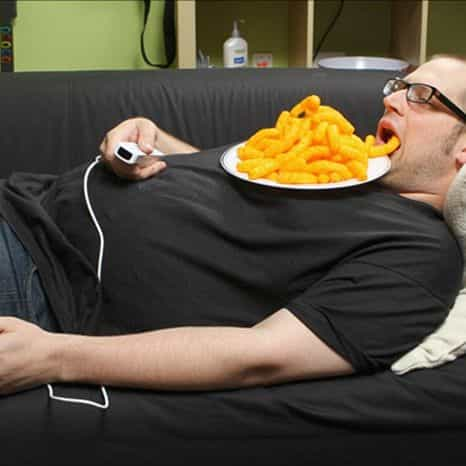
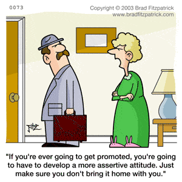

< < < Back
5 Things Holding Back Young Men – Return Of Kings
The manosphere is full of examples of how men can improve themselves. Everything from how to dress, how to lift, how to approach money, etc, can be found through a quick Google search. Regular readers of ROK are aware of the benefits of self-improvement and have some knowledge of red pill philosophy. However, what about the young men out there? The ones with no knowledge of game who are not in the position to just up and travel the world in search of self-improvement? Why is there such an uneven split between younger guys making strides in life and so many more floundering with no direction? I’ve seen a few things that seem to be holding back young men from their full potential. Here they are:
1. They have no path
A 20-year-old American college male, whether from a lack of father figures in his life or no adequate role models, have few clearly drawn paths of success that he can emulate. Gone are the days of rituals and rites to becoming a man, and only a handful of men experience the impact of wars that shaped many of our grandfathers’ view of the world. Without a path, many young males fail to gather a sense of ambition. No one is telling them how to become successful.
With all the “girl power!” and push for women to grow their career, many young males are simply checking out. My belief is that this isn’t from wide spread lack of options but rather the lack of any adequate reason. If you are 20 and can pull the hot sorority girl with no problem, why bust your ass to get into med school? If you are living off student loans and surrounded by girls who just want to hook up (Tinder), what reason would some guys have to bust their ass and head out on their own? This leads me to the next point…
2. They see too many girls
Typical American Campus
Undergrad degrees for women have exploded in the past few decades. From 9.1% in 1970 to 50% in 2012 (and now actually increasing past boys). In 1970 only one out of ten of your fellow classmates would have been a girl. Some campuses are actually experiencing a severe lack of men. You would think that would be perfect, right? Wrong.
In college, I was friends with a handful of good looking fraternity men who held parties at their apartment. Every week they got with a new girl. It was clockwork. What were the other dudes doing? Sitting in their dorm, waiting for their dream girl. The current college scene is skewed for guys who already know game (or have social skills).
Picture this: you are a 20-year-old college guy. You have a crush on that pretty girl in your Women’ Studies class. You talk to her every day but can’t work up the courage to ask for her number. You see her in class bragging about hooking up with more than one guy over the weekend. You will soon grow to resent “slutty” girls instead of just improving yourself and becoming a guy that girls actually want to hook up with. The common hook-up culture has been discussed at length, but those girls will be hooking up the guys who already know game.
3. They don’t even lift

Young men are in poor shape. It’s so bad that it’s actually becoming a national security issue. Taking the time to become active is a long stretch (find a good program like 5/3/1 or Starting Strength and then spend 5 years improving yourself). For the chubby, young male who is bombarded with girls getting hysterical over “hot guys with abs,” the process would seem near impossible. It takes a long process to get a body close to that. To look hot, women just need to put the cupcakes down.
4. They don’t know about money
Few high schools offer classes on taxes and investing. Even few college men are taught anything about building a successful business and eventually become completely independent. Do you really think a young guy surrounded by slutty college girls would care about how to develop a 401k or what majors end up with better careers?
5. They aren’t assertive

I’m talking about having the courage to simply be honest with themselves. To ask that cute girl out. To make new friends. Many young guys simply have no clue how to assert themselves or even hold eye contact.
What happens to those who are not assertive? Imagine having a hot, single girl as your roommate for over 5 years. And never being assertive enough to tell her how you actually feel.
MTV has a show called “Friend Zone” where you can see for yourself the lack of assertion in the modern younger male. Skip to 17:10 in this clip and see what could happen in this roommate situation after the guy spills his love to her (spoiler: harsh rejection).
The manosphere appears to be aimed at that frustrated man seeking to improve his life, but little is spent on on catching that guy who just started talking to girls or that guy who doesn’t have the means to quit his job and simply go abroad to bang hot foreign girls. I list these 5 reasons in order because this is what you get when a younger man addresses all these issues:
- The realization of what it takes to become successful and established in a career
- Knowing what kinds of girls to approach and avoid in college (and life)
- Starting the path to being fit and realizing what it takes to get there
- How to handle money and set up investments and stocks (long term finances)
- Having the courage to be assertive in classes and work and actually approach the girls you like.
With so many online resources, it may be hard for a college age man to actually make sense of it all. If you’re 19, do you have the ability to leave America for a poosy paradise? Probably not, so keep it simple instead and start with the basics.
Read More: Why Young Men Need The Red Pill


{kind=link}
{kind=link}
{kind=link}
{kind=link}
{kind=link}